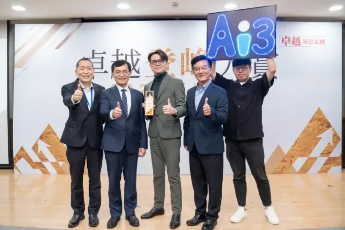
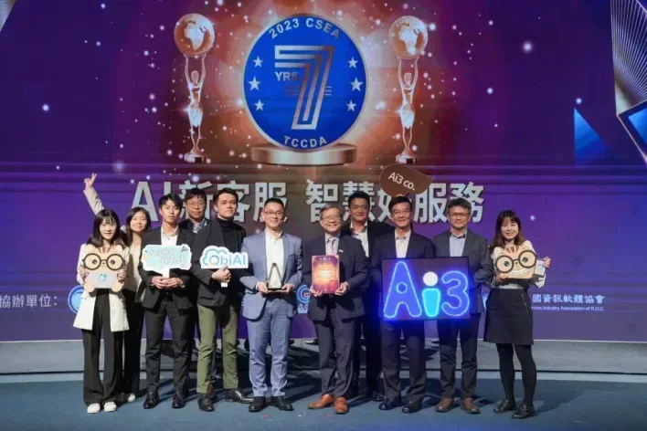

Ai3以實戰導向的AI應用及服務平台實力，榮獲2025年卓越登峰大賞「科技創新獎」。
在這個生成式AI快速崛起的時代，企業數位轉型不再只是潮流口號，而是攸關競爭力存續的核心命題。2025年，人工智能股份有限公司（簡稱Ai3）以實戰導向的AI應用及服務平台實力，榮獲卓越登峰大賞「科技創新獎」，成功為台灣人工智慧產業書寫一頁嶄新篇章。
Ai3用科技賦能客服產業，翻轉企業與顧客的互動方式，從導入AI的技術供應商蛻變為數位轉型的策略夥伴。這不僅是一場客服革命，更是一場以創新為底蘊、以實踐為力量的AI進化運動。
從技術切入服務：QbiCRM與QbiBot的雙核心架構
Ai3的核心技術架構，奠基於自有開發的QbiCRM智能客服管理系統與QbiBot智能對話機器人。兩者如同Ai3技術實力的左右臂，前者專注於企業端的客戶服務整合與管理，後者則是面向用戶的第一線智能應答界面。
QbiCRM系統結合自然語意處理（NLP）、情緒辨識、客戶歷程分析、知識庫管理等功能，可透過儀表板即時監控客服流量、回應速度與顧客滿意度。相較於傳統客服軟體，它不只解決問題，更能預測問題。
QbiBot則是Ai3在對話式AI領域的主打產品。它具備高度客製化與學習能力，能依據不同產業如金融、零售、政府、教育等需求進行語料調校，並持續優化應答邏輯，讓機器人越用越聰明。不僅能完成簡易查詢與表單填寫，還能無縫轉接真人客服，大幅提升顧客體驗與企業人力效能。
建構全通路資料整合力：從客服工具到商業智慧引擎
Ai3深知企業在數位轉型過程中，最常面對的挑戰是「數據碎片化」。為此，Ai3推出全通路客戶資料匯整解決方案，可整合網站、APP、社群媒體、門市POS等多元管道的顧客互動紀錄，形成統一的客戶視圖。
透過QbiCRM與QbiBot整合後，企業能洞察客戶行為與偏好，實現更精準的行銷推薦、忠誠度分析與客戶生命周期管理。這項服務已成功導入多家大型企業與政府單位，真正將AI應用從「客服前台」推進至「決策中台」。

▲Ai3團隊與經濟部次長何晉滄（左2）合影，中為總經理蔡鎧駿。AI即服務（AIaaS）：把人工智慧變成企業用得起的工具
Ai3不只是技術提供者，更是平台服務商。其打造的QbiAI平台，採用模組化設計與雲端部署架構，支援GPU資源彈性調度與模型熱更新，讓企業可依需求彈性選用AI模組，而無須承擔高昂建置成本。
這樣的「AI即服務（AIaaS）」策略，讓Ai3得以跨足大型企業與中小微型市場，推出租賃型AI產品，降低導入門檻，助力更多企業實現智慧化經營。實戰導向的技術整合者：從政府到金融的AI落地成果。
Ai3已協助超過百家企業導入AI應用，涵蓋政府機構、國營事業、金融產業、科技製造與零售業。舉例而言，在金融領域中，Ai3導入的QbiBot已有效協助銀行分流來自電話、LINE與Messenger的客戶諮詢，大幅減少人工負擔。
在政府應用方面，Ai3配合數發部計畫，導入多語客服系統，協助公部門提供24小時線上服務，促進政民互動數位化。而在製造與零售產業，Ai3的資料整合功能，亦被應用於售後服務與顧客行為分析，提升產品精準度與顧客滿意度。
GPT時代的進化版本：邁向AI 2.0互動體驗
Ai3並未停留在傳統AI應用，更積極布局生成式AI（Generative AI）技術整合。旗下產品如QbiBot GPT版本、QbiAI GPT版，皆結合ChatGPT與企業知識庫，實現企業內部專屬語言模型（Private LLM）應用。
這讓AI不再只是機械式應答者，而是能夠根據語境與語義提供創造性回應的「企業智囊」。尤其在知識密集型產業，這類產品已成為提升客服效率與內部知識管理的重要利器。
企業文化與未來願景：三 i 精神推動長遠創新
Ai3的創新不只體現在技術，更根植於企業文化。公司以「愛、新、勤、誠」為價值基石，推動「三I精神」──Intelligence（智能）、Innovation（創新）、Interaction（互動）。員工皆被鼓勵持續學習、跨部門協作，並將「解決客戶問題」視為最終使命。

▲Ai3以持續的技術累積，接連獲得各種政府獎項肯定，圖為CSEA頒獎典禮。在創新實力不斷累積之下，Ai3也接連獲得來自政府與業界的高度肯定。從經濟部的「創新研究獎」與「創新事業獎」、中華軟協的「金漾獎」智慧應用組冠軍，到勞動部頒發的TTQS人才發展品質銅牌獎與教育部體育署的運動企業認證，Ai3在研發、應用與人才培育三方面表現皆有亮眼成績。
2024年Ai3更榮獲數發部數產署Adi15數位新創獎與GCCA亞太區卓越客服大獎，實質印證其在AI應用落地與服務創新的雙重價值。如今再度榮獲「卓越科技創新獎」，是對其多年來深耕技術、強化平台與理解市場的總體成果肯定。
Ai3的故事告訴我們，真正的科技創新不是在實驗室誕生，而是在使用者的問題中找到答案。從客服進化出發Ai3用技術寫未來、用創新做橋梁，讓人工智慧真正走進生活、走進產業、走進每一位需要它的企業。在Ai3的藍圖裡，未來不再只是工程師的代碼夢想，而是一場企業、用戶與科技共創的新時代——以科技創新書寫AI未來的時代。